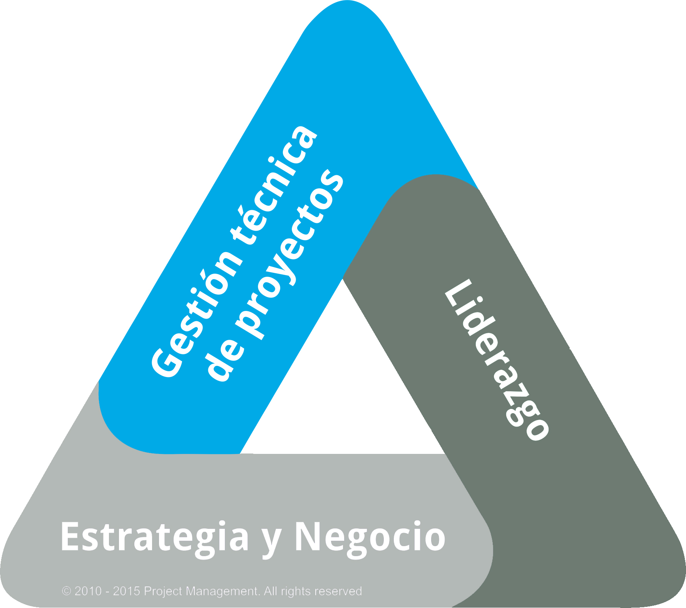
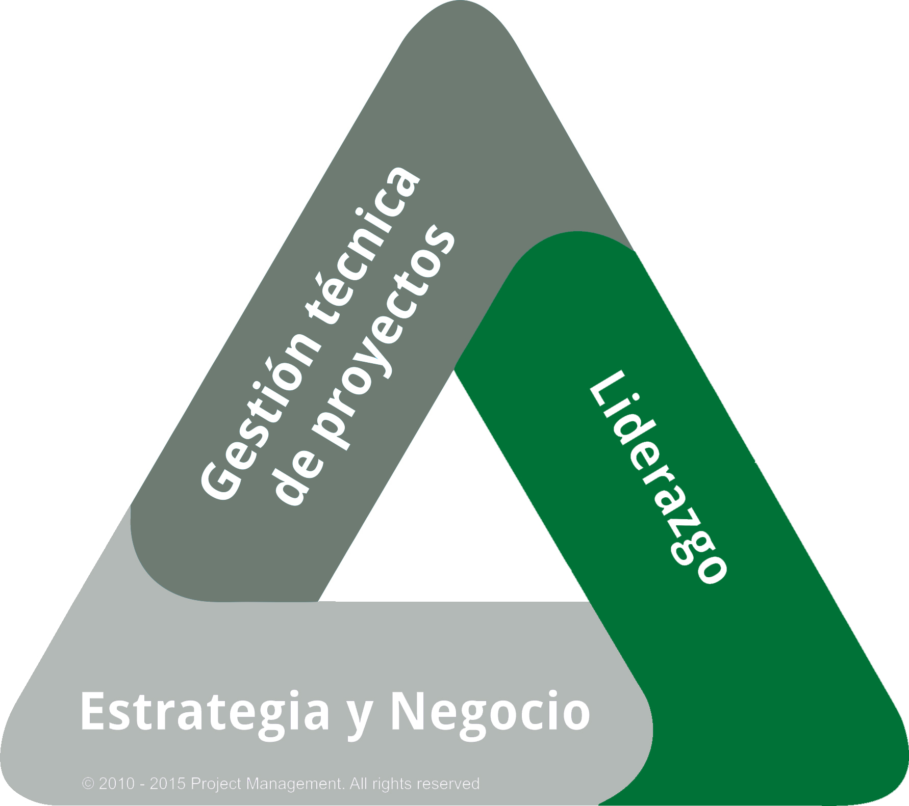
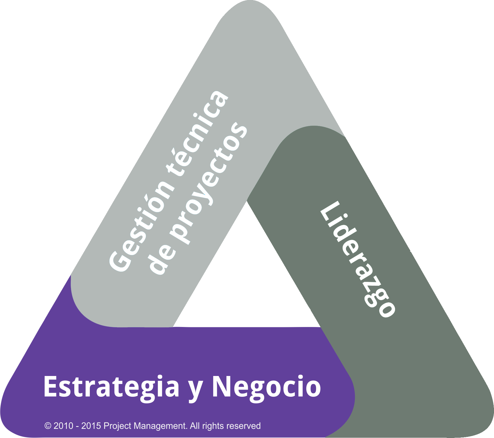

PM00.00 - DEP
Programa Dirección Exitosa de Proyectos (DEP)
Descubre y domina las principales herramientas y técnicas para entregar proyectos exitosos.

Descubre y domina las principales herramientas y técnicas para entregar proyectos exitosos.
Conocer los tipos de trabajo que se desarrollan en una organización y por qué es indispensable desarrollar una visión balanceada de esos tipos de trabajo.
Entender el marco de referencia de la dirección de proyectos de acuerdo con el PMI®
Explicar el ciclo de vida del proyecto.
Conocer las actividades que se llevan a cabo dentro de cada uno de los grupos de procesos, para incrementar las oportunidades de éxito del proyecto
Aplicar de manera práctica al menos 9 herramientas y técnicas relacionadas con la administración de un proyecto.
Ninguno
Profesionales y practicantes de la disciplina de Dirección de Proyectos que deseen contar con conocimientos en la practica
Módulo 01 – Introducción al programa
Módulo 02 – Introducción a la dirección de proyectos
Módulo 03 – Dirección de Proyectos, marco de referencia
Módulo 04 – Procesos y herramientas de Inicio
Módulo 05 – Procesos y herramientas de planeación
Módulo 06 – Procesos y herramientas de ejecución
Módulo 07 – Procesos y herramientas de seguimiento y control
Módulo 08 – Procesos y herramientas de cierre
Módulo 14 – Examen final
Módulo 15 – Cierre del programa.
48 horas
5 Sesiones semanales los dias jueves
Horario: de 18:30 a 21:30
| Precio de lista | $14,400.00 |
| Pago de contado | $12,000.00 |
| Parcialidades | $3,450.00 |
| Inscripción | $3,450.00 |
| Numero de parcialidades | 3 |
Material del participante
Constancia de participación
Technical PM
Leadership
Strategic and Business Management